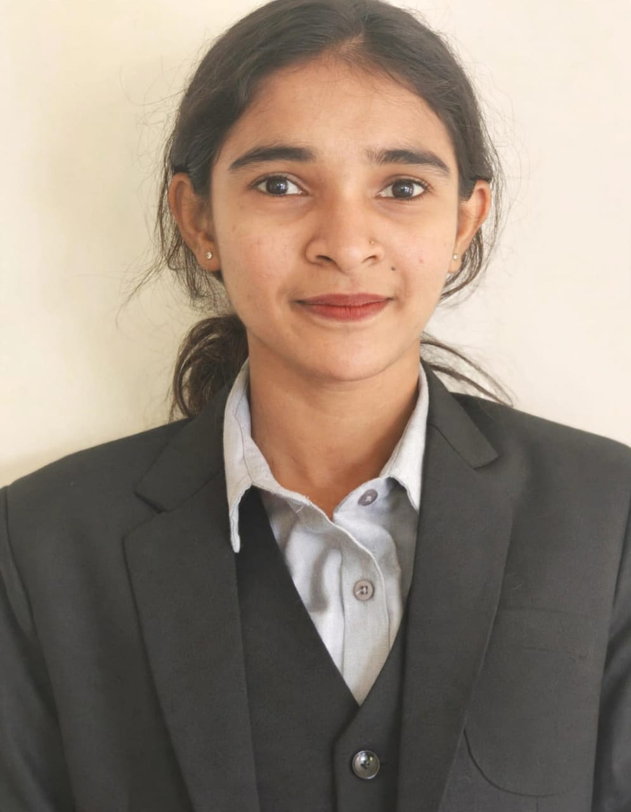

Suraksha
MCA Student, Poornaprajna Institute of Management, Udupi
Aspiring software developer pursuing a Master of Computer Applications, with interests in web development, databases and problem solving.

A journey connecting learning, code and creativity
Academics
Coursework in programming, data structures, Java, operating systems and software engineering.
View education →Projects
Hands-on work in web apps, databases and mini-projects built during the programme.
Explore projects →About Me
I Motivated and enthusiastic individual with a strong interest in software development and emerging technologies. Possess foundational knowledge of Java, Python, C, C++, SQL, HTML, CSS, and PHP. Have worked on academic projects involving disease symptom prediction, food ordering and student management using PHP, and a Library Management System using Android Studio and XML. Eager to learn new technologies, improve technical skills, and build a successful career in the IT industry.
Education & Experience
Projects & Research
Disease Symptom Prediction
Developed a project to predict possible diseases based on user-provided symptoms.Used symptom analysis to provide preliminary disease predictions.
Food Order and Student Management System
Developed a web-based application using PHP to manage student details and food orders.Simplified student information management and food ordering.
Library Management System
Developed an Android application to manage library activities, including book details and library records.Used Android Studio and XML for application development.
Skills & Learning
Achievements & Interests
Natural Language Preprocessing
Contact
Email: surakshakotian19@gmail.com
Phone: +918431534984